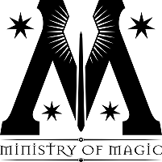
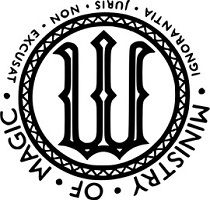
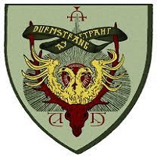

Our Departments
Department of Magical Sciences

The Department of Magical Sciences is dedicated to the study and advancement of magical knowledge. Wizards and witches here delve into the mysteries of spells, potions, and magical creatures. Some notable professors in this department include Professor Flitwick (Charms), Professor Snape (Potions), and Professor Sprout (Herbology).
Department of Wizardry

The Department of Wizardry focuses on training young witches and wizards in the art of magic. From basic spells to advanced charms, this department ensures that students are well-prepared for their magical journey. Some notable professors in this department include Professor McGonagall (Transfiguration), Professor Flitwick (Charms), and Professor Moody (Defense Against the Dark Arts).
Department of Magical Creatures
In this department, magical creatures are studied and cared for. From Hippogriffs to Blast-Ended Skrewts, our experts work to understand and protect the diverse magical beings in our world. Some notable professors in this department include Professor Hagrid (Care of Magical Creatures), Professor Kettleburn (Care of Magical Creatures), and Professor Newt Scamander (Magizoology).
Department of Alchemy
The ancient art of alchemy is explored in this department. Students learn to transmute substances, create powerful elixirs, and unlock the secrets of the Philosopher's Stone. Some notable professors in this department include Professor Dumbledore (Albus Dumbledore), and Professor Nicolas Flamel (renowned alchemist).
Department of Divination
Seers and mystics guide students through the mystical art of divination. Crystal balls, tea leaves, and the interpretation of dreams are among the many subjects explored in this department. Some notable professors in this department include Professor Trelawney (Divination) and Professor Firenze (Centaur Divination teacher).
Department of Herbology

The Department of Herbology focuses on the study and care of magical plants. Students learn to identify, cultivate, and use magical plants in potions, medicine, and other magical applications. Some notable professors in this department include Professor Sprout (Head of Herbology) and Professor Neville Longbottom (Herbology professor).